01
Services
- ↗Tug & Barges Transshipment
- ↗Tug & Barge Inter Island
- ↗Floating Crane Transshipment
- ↗Domestic Bulk Carrier
- ↗International Bulk Freight
- ↗Agency Tug & Barges
ABOUT SJN
Established in 2023, PT Segara Jaya Nusantara (SJN) is the independent marine-logistics company, part of Nusa Mitra Group (www.nusamitragroup.com). it has grown impressively — from barging units into a fully integrated operator commanding tug & barge fleets, bulk carriers, and high-capacity FLF transhipment.
SJN specializes in the sea-freight and transhipment of bulk raw materials — coal, nickel ore, bauxite and related commodities — serving miners, traders and industrial off-takers across South Sumatra, West Java, Central Java, South Kalimantan, East Kalimantan, and Sulawesi.
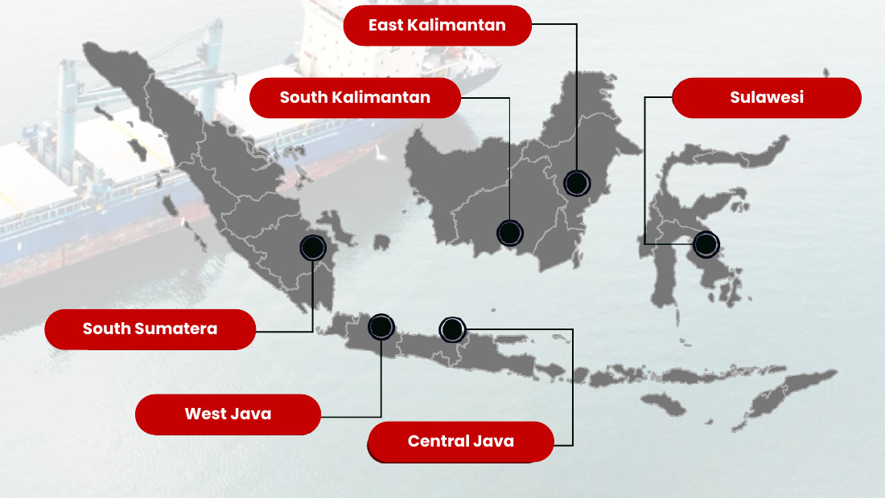
ABOUT SJN
Supporting inter-island and international transportation with services designed around your operations.
ABOUT SJN · Our Fleet
Our fleet provides a range of options to meet diverse shipping and logistical demands.
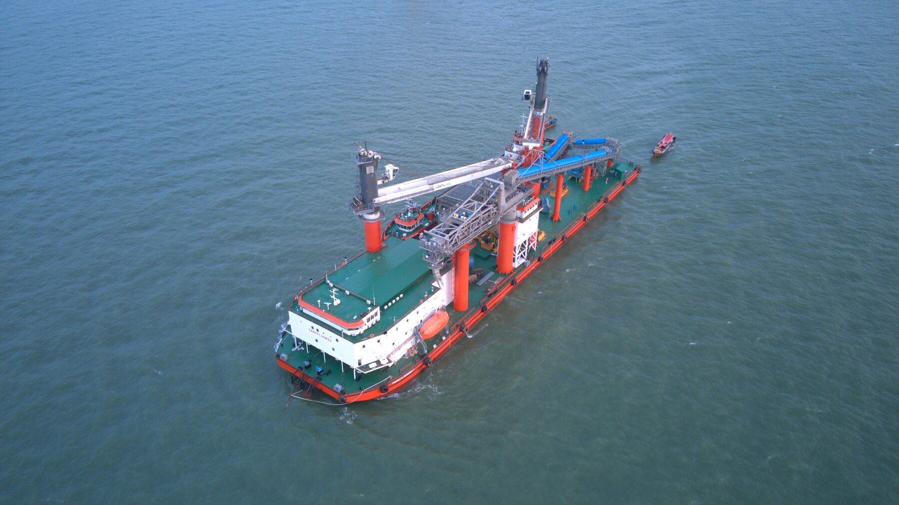
FLOATING CRANE
Loading Rate : 40,000-50,000 MT/day
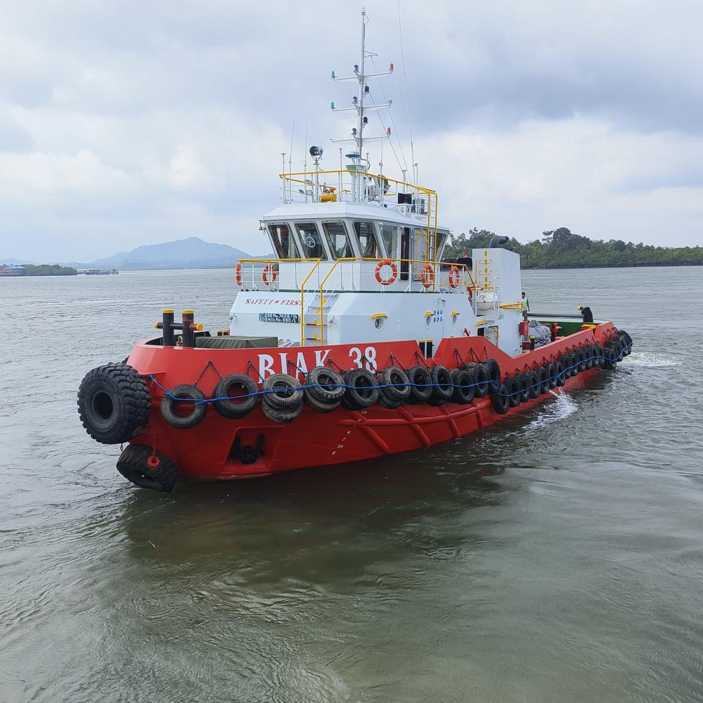
TUGBOAT & BARGE
300 ft (7,500 MT): 24 sets
300 ft Jumbo (8,000 - 9,000 MT): 27 sets
330 ft (10,500 MT): 4 sets
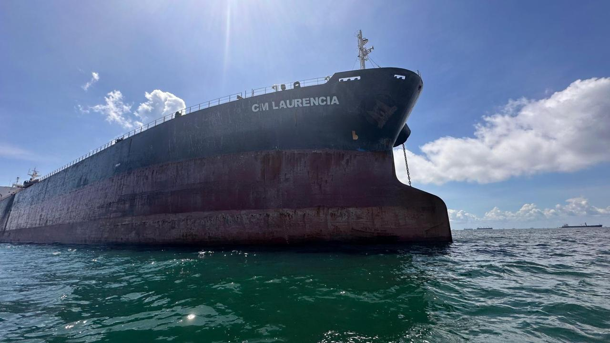
VESSEL
Panamax
Capacity: 60,000 - 79,999 DWT
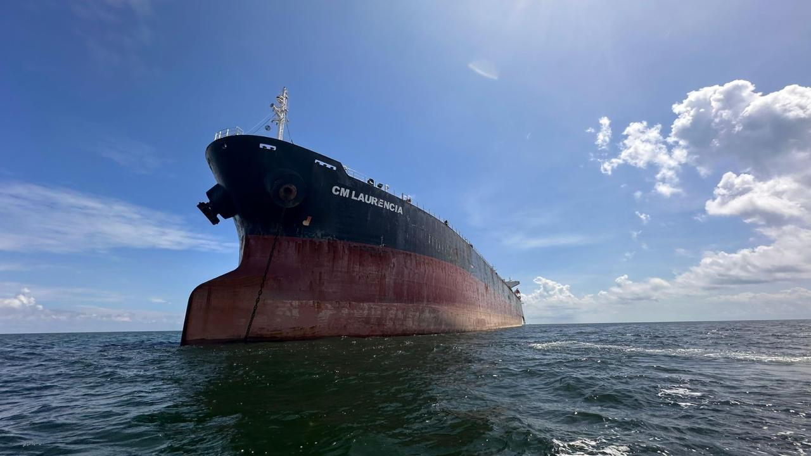
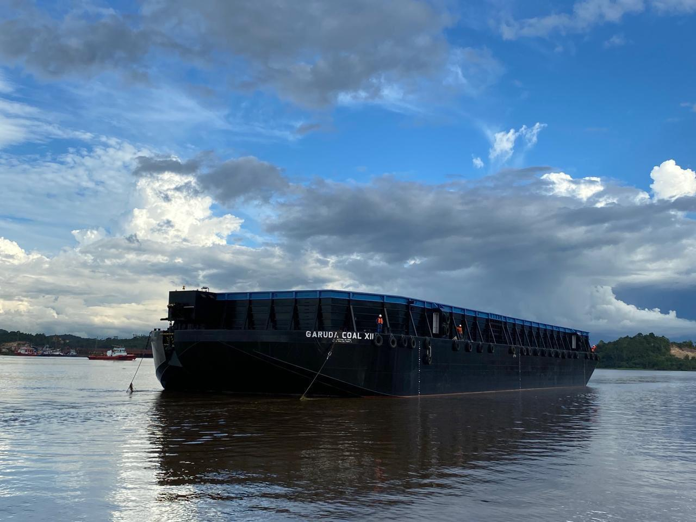
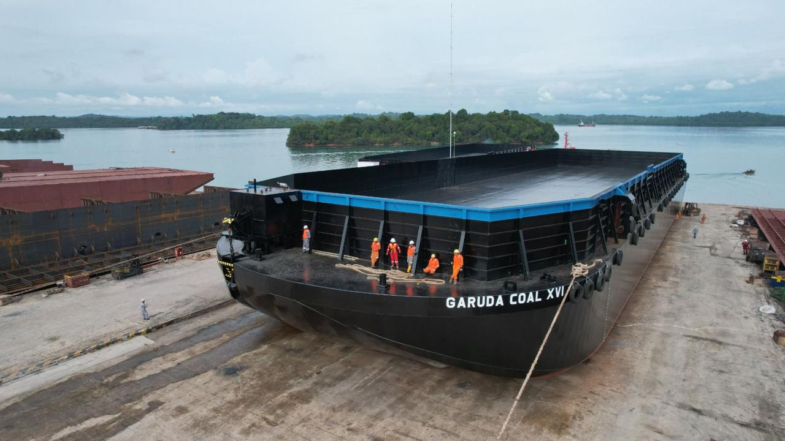
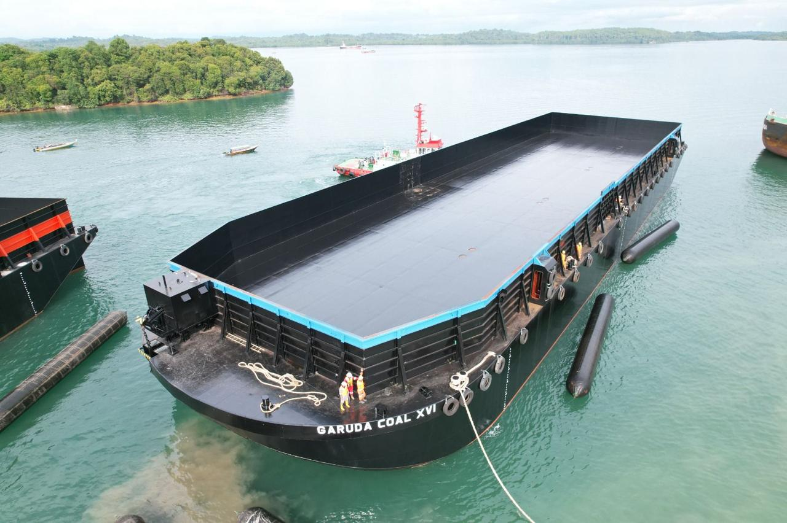
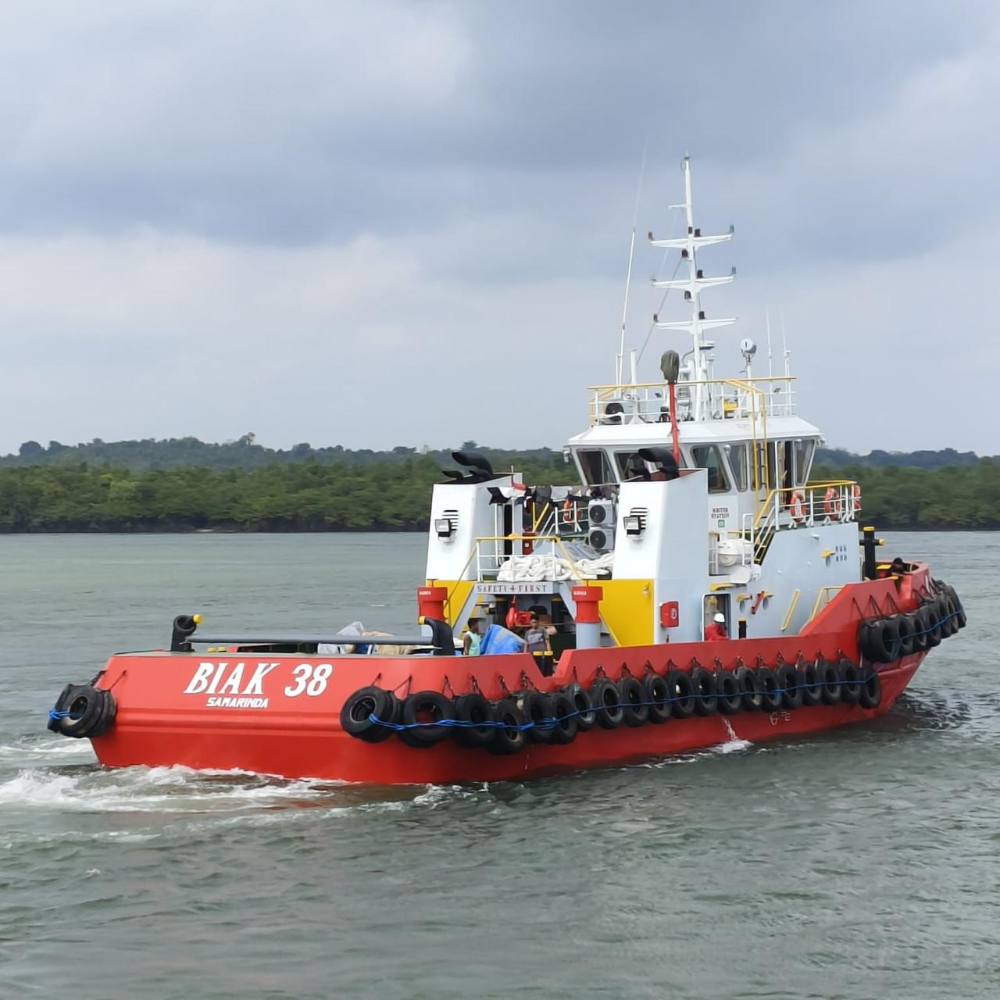
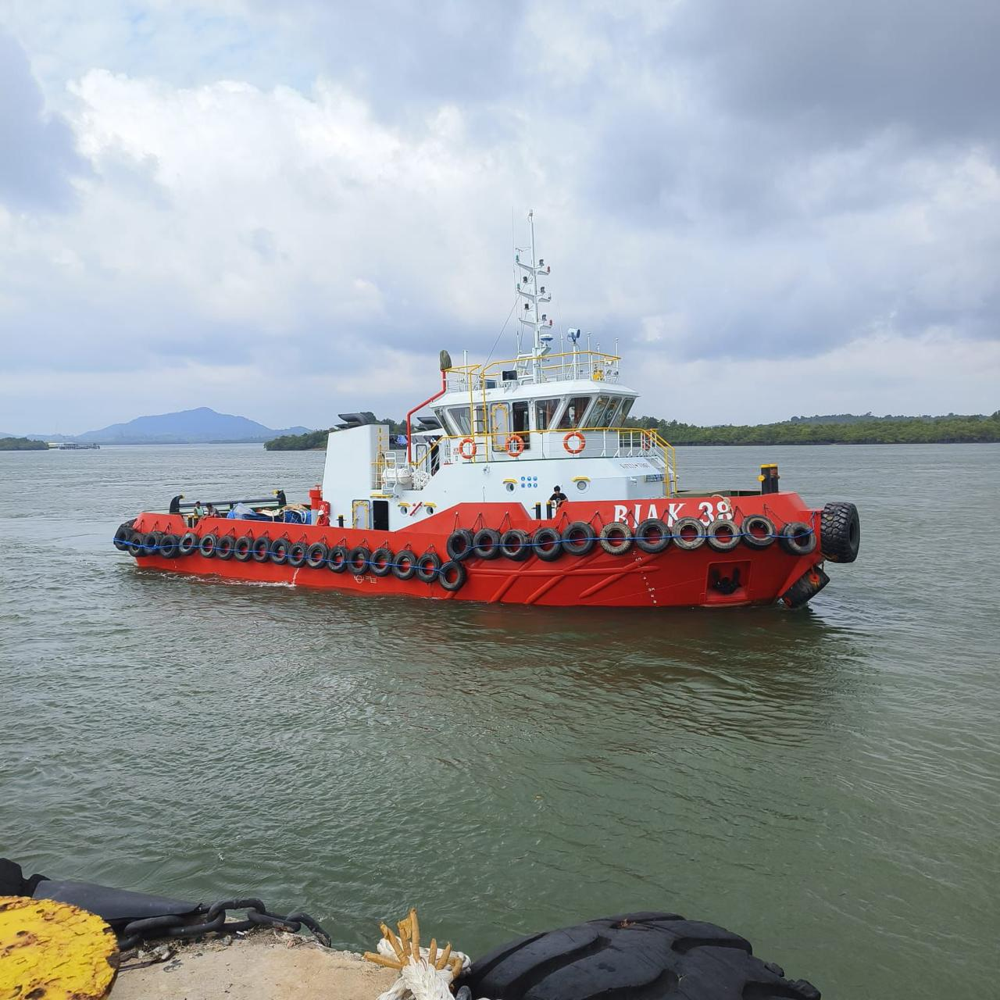
PORTFOLIO
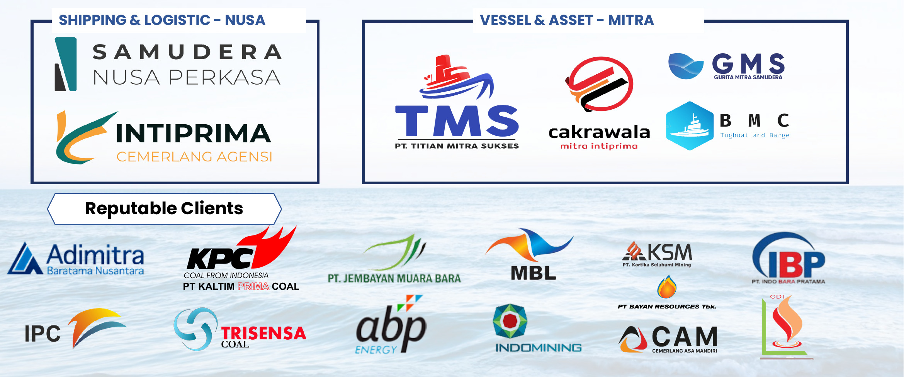
Partners · SHIPPING & LOGISTIC - NUSA
Samudera Nusa Perkasa · Intiprima Cemerlang Agensi
Vessel & Asset Partners
PT Titian Mitra Sukses (TMS) · Cakrawala Mitra Intiprima · GMS Gurita Mitra Samudera · BMC Tugboat and Barge
Reputable Clients
Adimitra Barutama Nusantara · KPC PT Kaltim Prima Coal · PT Jembayan Muara Bara · MBL · PT Kartika Selabumi Mining (KSM) · PT Bayan Resources Tbk · PT Indo Bara Pratama (IBP) · IPC · Trisensa Coal · ABP Energy · Indomining · CAM Cemerlang Asa Mandiri · CDI
Trust and collaboration are part of every journey.
CONTACT INFO
Head Office
Jl. Gatot Subroto No.Kav. 35-36, RT.6/RW.3, Kuningan, Kuningan Tim., Kecamatan Setiabudi, Kota Jakarta Selatan, Daerah Khusus Ibukota Jakarta 12950
Site Office
Jln. AW. Syahranie, Perumahan Villa Tamara Blok O No. 19, Kel. Gn Kelua, Kec. Samarinda Ulu, Kota Samarinda Kalimantan Timur 75124
PT SEGARA JAYA NUSANTARA
Efficient Shipping, Empowering Energy
Disclaimer The material in this presentation has been prepared by PT Segara Jaya Nusantara and general background information about PT Segara Jaya Nusantara activities current as at the date of this presentation. This information is given in summary form and does not purport to be complete. Information in this presentation should not be used as basis for analysis for investors or potential investors.
Any detail and information from this presentation should not be copy, reproduce, modify, create derivative works transmit or in anyway exploit such content distributed, copied and make use for any other purpose without notifying PT Segara Jaya Nusantara.